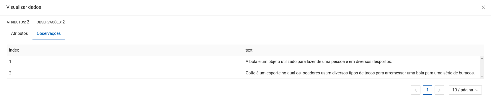
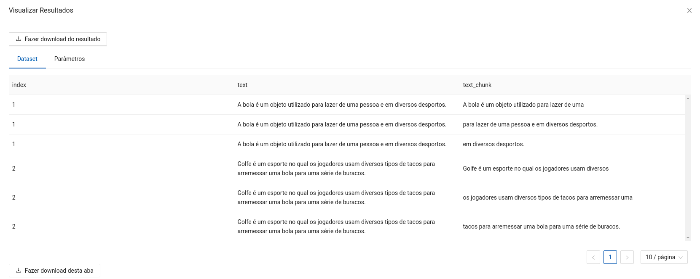
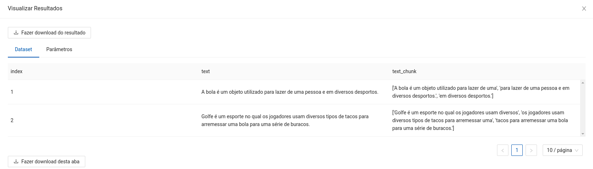

Separação de textos em partes menores, mantendo uma porção de sobreposição.
.) são definidos pela aplicação do NLTK, que é uma biblioteca de linguagem natural.Chunk Size e Chunk Overlap sendo 10 e 4, respectivamente.Espera-se como entrada para o componente uma tabela com uma coluna de interesse para a aplicação do Chunker, em que cada campo corresponde a um texto que será quebrado em partes menores.

A seguir são listados todos os parâmetros utilizados pelo componente:
string (Obrigatório).string (Obrigatório).string, {"word", "sentence"}, padrão: "word" (Obrigatório)."word" separa textos em palavras, "sentence" separa em sentenças.integer, padrão: 96 (Obrigatório).integer, padrão: 64 (Obrigatório).string, {"sim", "não"}, padrão: "sim" (Obrigatório).O retorno durante a experimentação ajuda o usuário a analisar tanto métricas distintas de forma visual, como a distribuição dos dados e os dados brutos ao final da execução. Sendo assim, é possível visualizar diversos retornos para este componente como os listados a seguir:


Na implantação, espera-se uma requisição do tipo POST com os dados em formato JSON, com os campos ndarray e names seguindo a mesma estrutura dos dados utilizados na experimentação, em que ndarray refere-se aos valores, e names aos nomes das colunas de entrada. Um exemplo de uso seria:
$ curl --header "Content-Type: application/json" https://URL-DO-MODELO-IMPLANTADO -d "{"data":{"ndarray":[[1, "A bola é um objeto utilizado para lazer e em diversos desportos."]], "names": ["index", "text"]}}"
Espera-se como retorno um objeto JSON contendo os campos ndarray e names, referentes ao array de valores produzidos e ao nome das colunas após a aplicação. Um exemplo de saída seria:
{
"data":
{
"ndarray":[[1, "A bola é um objeto utilizado para lazer e em diversos desportos.", "A bola é um objeto utilizado para "], [1, "A bola é um objeto utilizado para lazer e em diversos desportos.", "lazer e em diversos desportos."]],
"names": ["index", "text", "text_chunks"]
}
}